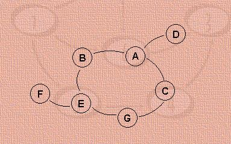
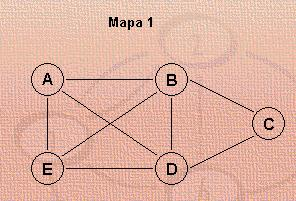

A estrutura de dados utilizada para a representação de um grafo é formada por listas ligadas a listas, que já foi estudada como aplicação no capítulo referente a listas. Por este motivo, não há necessidade de se estudar aqui os algoritmos mais simples para grafos, como por exemplo: construção de um grafo através de um; remoção de um grafo inteiro, inserção ou remoção de um nó, etc.
A construção dispensa explicações, pois já foi visto um algoritmo muito parecido em listas ligadas a listas.
void ConstroiGrafo2(no **eginicio) { FILE *arq;Um problema comum no uso de grafos é caminhar os seus nós seguindo uma determinada estratégia. Naturalmente, se o problema consiste apenas em “visitar” todos os nós, basta caminhar todos os elementos da lista de nós. Mas em geral o que se deseja é, a partir de um determinado nó, visitar todos os outros nós aos quais se pode chegar. Dizendo de outro modo, trata-se de visitar todos os nós para os quais exista caminho, a partir de um determinado nó.
Duas estratégias podem ser usadas para efetuar essa tarefa: camihamento em amplitude e caminhamento em profundidade. Exemplifiquemos utilizando o grafo abaixo, supondo-se que o nó de saída seja o nó A. Neste caso o grafo é não dirigido e conexo. Desse modo, todos os nós poderão ser visitados a partir do nó A
No caminhamento em amplitude, depois de visitado o nó A, são visitados seus vizinhos (B,C,D). Em seguida são visitados os vizinhos de cada um deles (vizinhos do B: nó E; vizi-nhos de C: nó G; vizinhos de D: ninguém) e assim por diante. Cada vez que um nó é visitado, ele é marcado, para que não seja visitado novamente. A seqüência gerada por essas visitas é: A B C D E G F.
No caminhaimento em profundidade inicia-se pelo nó A e continua-se por um de seus vizinhos (B) e depois um vizinho de B (E), etc., caminhando-se o caminho mais comprido possível. Esgotado esse caminho, retorna-se ao penúltimo nó desse caminho e aplica-se a mesma estratégia para seus outros vizinhos. Sempre que um caminho se esgota, volta-se ao nó anterior nesse caminho, até que se chega aos outros vizinhos de A, que foi o nó de partida. A seqüência gerada por essas visitas é: A B E F G C D.
A função CaminhaGrafoAmplitude utiliza estrutura de dados vista anteriormente, na qual foi acrescentado, em cada elemento da lista de nós, um campo lógico usado, para indicar se o nó já foi visitado. O parâmetro pno1 é um ponteiro que aponta para o nó a partir do qual se dá o caminhamento. É utilizada uma fila (fila) de ponteiros que apontam para os nós do grafo. A figura que representa a estrutura de dados foi simplificada para facilitar a compreensão: no lugar dos ponteiros “adj” foram colocados os nomes dos nós apontados por esses ponteiros.
typedef struct tipofila {
A função CaminhaGrafoProfundidade foi construída de forma recursiva, o que a torna bastante simples. Pode-se construir uma versão análoga ao do caminhamento em amplitude, utilizando uma pilha em lugar de uma fila.
Esta função utiliza a técnica denominada de backtracking. O programa avança por um caminho até não encontrar saída, e então recua um passo (ao nó anterior no caminho pesqui-sado) e tenta outro caminho, até não encontrar saída novamente, e assim por diante.
Esse mecanismo aparece nos próximos algoritmos, com algumas variações.
a) função que verifica se existe algum caminho entre dois nós
Esta função apenas verifica se existe algum caminho entre dois nós dados. Retorna 1 quando descobre algum caminho, e retorna 0 se não há caminho algum entre os dois nós dados. O processo de backtracking é interrompido quando a função encontra algum caminho entre os dois nós dados.
b) função que determina um caminho entre dois nós
Esta função também procura se existe algum caminho entre dois nós dados. Sua diferença em relação à função anterior é que, se existe algum caminho, ela guarda em uma pilha a seqüência de nós que forma esse caminho.
c) função que determina todos os caminhos existentes entre dois nós
Neste caso, a função não encerra a execução quando encontra o primeiro caminho, mas continua procurando e registra todos os caminhos encontrados entre dois nós.
d) função que determina caminho crítico
Esta função é aplicada a nós que têm os arcos valorados. Chama-se um caminho crítico aquele com o maior ou o menor valor da soma dos valores dos arcos. Pode-se aplicar um critério análogo para grafos com os nós valorados. Neste caso, a função guarda o primeiro caminho encontrado na pilha e continua à procura de outros. Cada vez que um novo caminho é encontrado, calcula o seu valor. Se o valor do novo caminho é maior do que o valor do ca-minho armazenado, o novo ocupa o lugar do antigo, e assim por diante. No final, o caminho armazenado será o de maior valor.
Se o grafo é uma rede, este algoritmo é útil para ser aplicado entre os nós fonte e sorvedouro, para determinar o caminho crítico da tarefa que a rede modela.
e) Caixeiro Viajante
O problema do caixeiro-viajante é clássico na Computação. Faremos aqui uma aplicação de grafos a uma situação simplificada desse problema. Um vendedor tem que caminhar uma série de cidades interligadas por várias estradas, cada uma delas com um custo associado (nem to-das as cidades se ligam diretamente a todas as outras). A questão é determinar qual o melhor percurso a realizar, de modo que o custo total seja mínimo, ao mesmo tempo em que todas as cidades devem ser caminhadas e nenhuma delas deve ser repetida.
Para simplificar o problema, partiremos da suposição de que existe um ou mais ciclos envolvendo as cidades, e não há nenhuma cidade que deixe de pertencer a algum desses ci-clos. Por exemplo, na figura abaixo, o mapa1 pode ser resolvido pelo nosso programa, mas o mapa2 não pode, pois a cidade C não faz parte de nenhum ciclo (o vendedor teria que percor-rer o trecho BC na ida e na volta). No mapa1 há vários ciclos passando por todas as cidades: ABCDEA, AEDCBA, ADCBEA.
Nossa solução é dada pela função CaixeiroViajante, que efetua a pesquisa dos vários caminhos possíveis. São utilizadas duas pilhas para armazenar ponteiros para os nós: a pilhaatual armazena os caminhos correntes, que estão sendo pesquisados, e a pilhamin é usada para guardar ciclos fechados que contêm todas as cidades (caminhos válidos). A variável valoratual guarda o custo atual do caminho que está sendo pesquisado em pilhaatual, e a variável valormin guarda o custo do caminho válido encontrado e armazenado em pilhamin. Cada vez que um caminho válido é encontrado, verifica-se se o seu custo é menor que o custo do último caminho válido. Neste caso, o novo passa a ocupar o lugar do anterior. Ao final do procedimento, em pilhamin está presente o melhor caminho possível, e seu custo está armazenado em valormin. A variável valormin é inicializada fora de CaixeiroViajante, com o valor da soma de todos os arcos do grafo.
A função CaixeiroViajante é auxiliada pela função TodosNosMarcados, que verifica se todos os nós existentes no grafo estão usados, ou seja, se o caminho passou por todas as cidades.
int TodosNosMarcados(no *ginicio) {